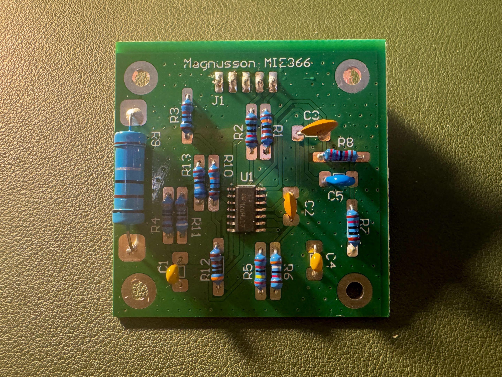
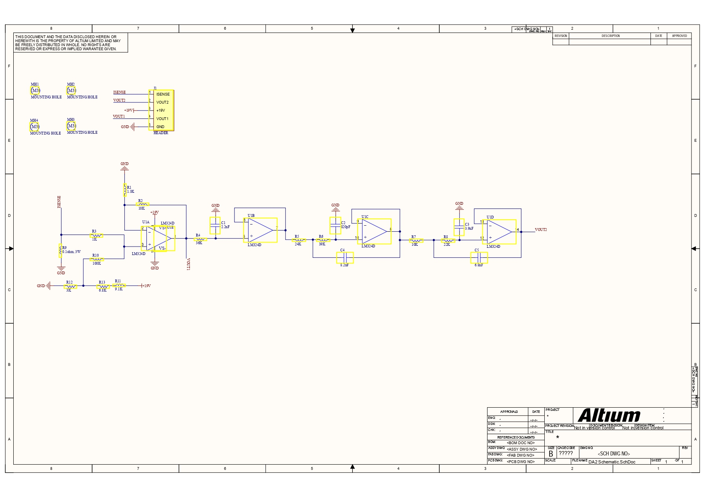

← All projects
2026 · Electronics for Robotics · Altium Designer
Current Sense Amp & 5th-Order Low-Pass Filter PCB
A compact 50 mm × 50 mm two-layer printed circuit board integrating an analog current-sense amplifier and a 3-stage Butterworth-Bessel anti-aliasing filter on a single LM324 quad op-amp.

Key Specifications
| Board Dimensions | 50 mm × 50 mm (2-layer copper + silkscreen, 4× M3 mounting holes) |
|---|---|
| Active IC | Single LM324 Quad Op-Amp (1 stage sense amp + 3 stages filter) |
| Filter Topology | 5th-Order Butterworth-Bessel 0.95 (1 buffered RC + 2 Sallen-Key stages) |
| Frequency Response | 1 kHz cutoff (-0.1 dB passband flatness), -38.9 dB attenuation at 5 kHz |
| Supply & Sensing | +19V single supply, onboard 0.1 Ω shunt resistor, 5-pin I/O header |
Circuit & PCB Design
- Single-IC Architecture: Consolidated both the current-sense amplifier stage (DA1) and the 3-stage active low-pass filter (DA2) onto all four op-amp channels of a single LM324 package to minimize board footprint.
- Filter Synthesis: Designed a 5th-order Butterworth-Bessel (0.95) response using standard 5% E24 resistor values, achieving flat passband gain through 1 kHz while exceeding the 35 dB attenuation target at 5 kHz (-38.9 dB simulated).
- Layout & DFM: Routed top and bottom copper layers in Altium Designer with dedicated off-board header pins (
ISENSE,VOUT1,VOUT2,+19V,GND) and four corner M3 mounting holes.
